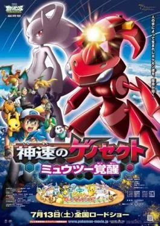

The genetics
The film's two central creatures are products of human technology: Genesect, revived from 300-million-year-old fossils and fitted with a cannon by Team Plasma, and Mewtwo, a clone of Mew made from a fossil. The scientists themselves do not appear; the sources only say that they revived and modified Genesect and, according to Spanish Wikipedia, created this Mewtwo, which telepathically learns of the Genesect's origin. The story is about these engineered, displaced beings: the revived Genesect, lost in a modern city and distrustful of everyone, try to rebuild their ancient home and endanger the city, while Mewtwo, who says she always thought she was alone, defends others. The film ends on coexistence, with the Genesect given a new home. De-extinction from fossils is a real research ambition, but DNA does not survive for 300 million years, so reviving such creatures is impossible.
How genetics is portrayed
- Overall portrayal of genetics
- mixed Human-made creatures are a source of danger and of loneliness, but the film ends on reconciliation and coexistence rather than condemnation; the absent scientists are not judged.
- Outcome of the genetic intervention
- mixed The revived Genesect, displaced in a modern city, attack people and Pokémon and endanger the power supply, while the cloned Mewtwo protects others; in the end the Genesect find a peaceful new home.
- Team Plasma scientists
- neutral Aim: not stated (not applicable). In the backstory they revive Genesect from fossils, arm it with a cannon and (per one source) clone Mewtwo; the film does not show them or say why they did it.
The story
Ash, Iris and Cilan visit Pokémon Hills, a nature park in New Tork City, where Ash befriends a lost Genesect, a Pokémon extinct for 300 million years and revived by humans. A red Genesect attacks them, and Mewtwo, a human-created Pokémon, protects them. That night five Genesect take over the park, drive out its Pokémon and build a nest near Panna Lotuses, a flower from their ancient home, threatening the city's power supply. Mewtwo confronts the hostile red Genesect, and the park's Pokémon fight the others. When the nest catches fire, Ash's Oshawott and the wild Pokémon help save the Genesect, who realise the others are not their enemies. The red Genesect's last attack is carried into space by Mewtwo, where the sight of Earth convinces it that all are friends; the wild Pokémon cushion their fall. Ash and his friends take the Genesect to a national park where Panna Lotuses grow.
Sources
- https://en.wikipedia.org/wiki/Pok%C3%A9mon_the_Movie%3A_Genesect_and_the_Legend_Awakened
- https://es.wikipedia.org/wiki/La_pel%C3%ADcula_Pok%C3%A9mon%3A_Genesect_y_el_despertar_de_una_leyenda
- https://pt.wikipedia.org/wiki/Pok%C3%A9mon_the_Movie%3A_Genesect_and_the_Legend_Awakened
- https://norske-dubber.fandom.com/no/wiki/Pokémon_filmen_-_Genesect_og_legenden_vekkes_(Film)